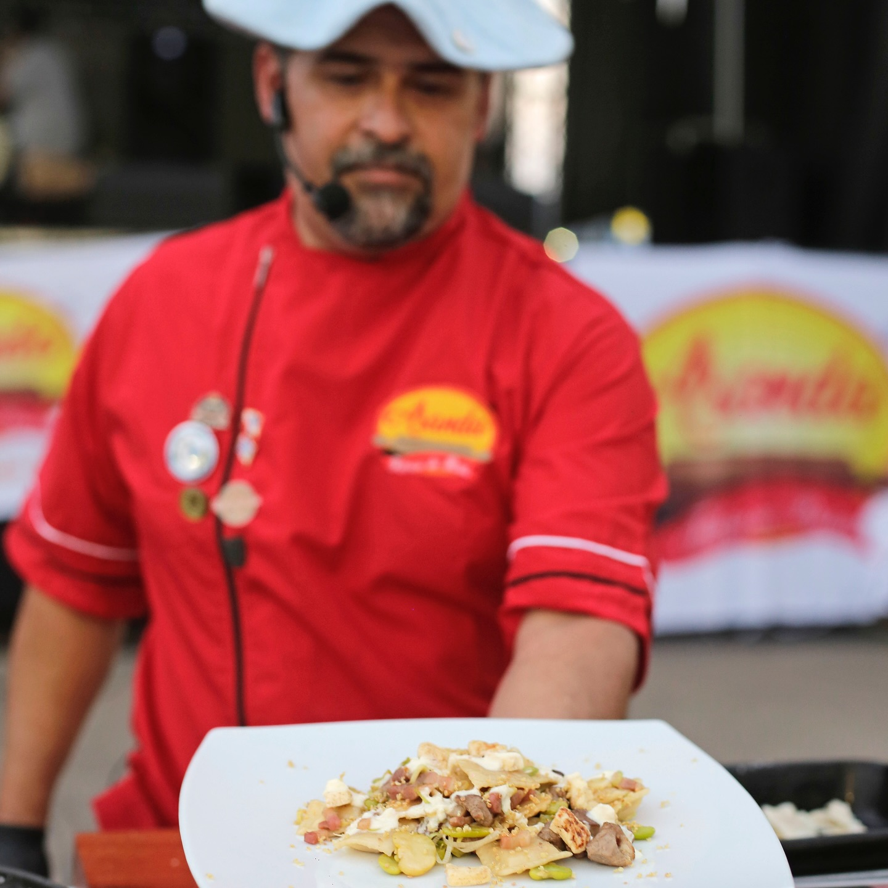

Nuestra historia
Nacimos en San Salvador de Jujuy en 1960. Desde entonces conservamos recetas familiares y procesos artesanales que hacen únicas nuestras pastas.
- Respeto por los tiempos de la masa.
- Selección cuidadosa de materias primas.
- Compromiso con la frescura y la cercanía.

Más de 60 años alimentando al NOA con sabor casero.
Misión
Llevar pastas frescas confiables y sabrosas a cada mesa, con atención personalizada.
Visión
Ser la fábrica de referencia del NOA por calidad, constancia y calidez humana.